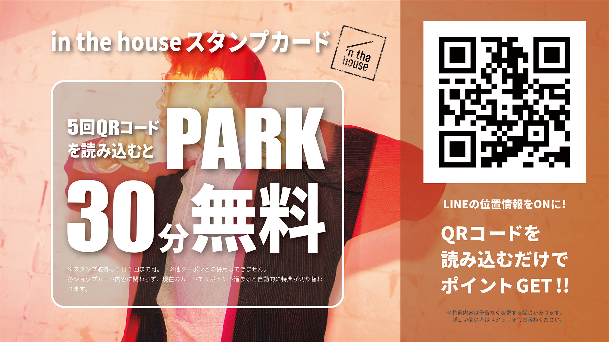
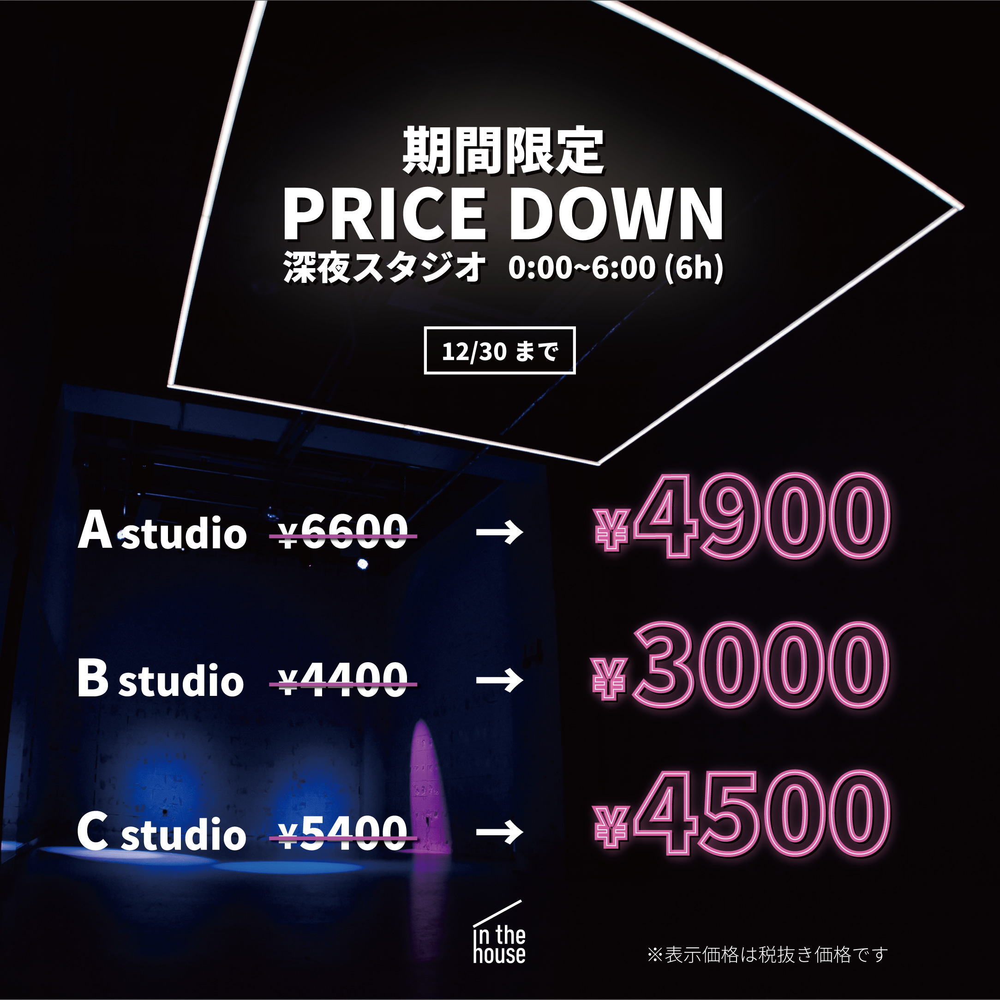

POPを初めて製作したとき、デザインと情報のバランスが取れず、何を伝えたいのかよく分からない作品になってしまうことが多々ありました。学校の授業とは違う、実際に掲載されて会社の売り上げに直結するようなデザインは、責任を感じながらも確実に成長できる仕事でした。
デザインを考えるよりも前に、まず伝えたい情報を明確化してぱっと見でも内容を識別できるようにサイズや配置を検討し、それから効果的に見えるようなデザインを考えることで、頭の中が整理された状態で製作を行えるようになりました。
スタジオPOP製作
株式会社in the houseで、スタジオ内の掲示物やバナーなど多数の広告をデザインしました。

